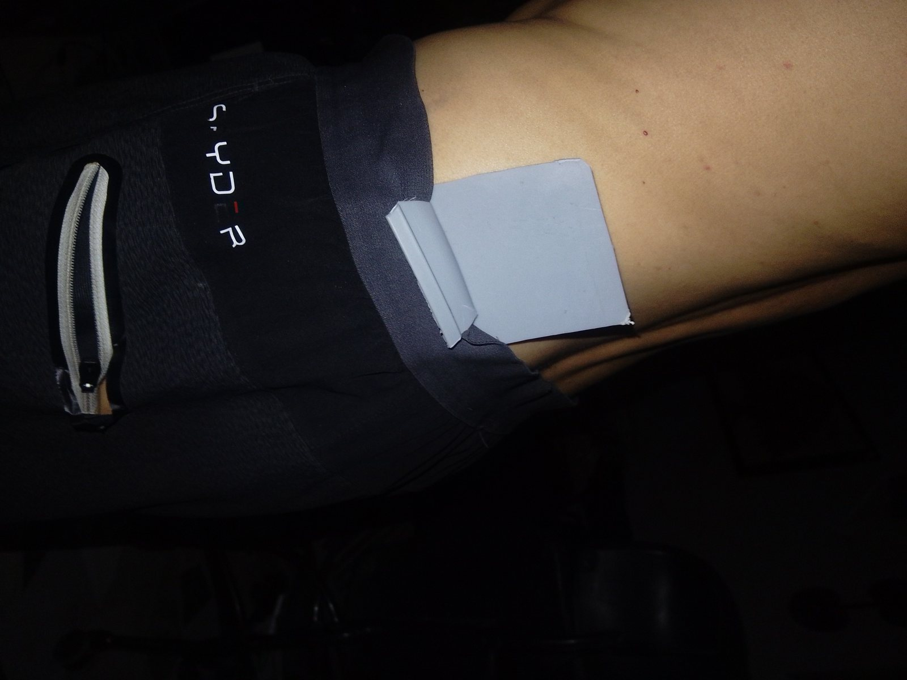
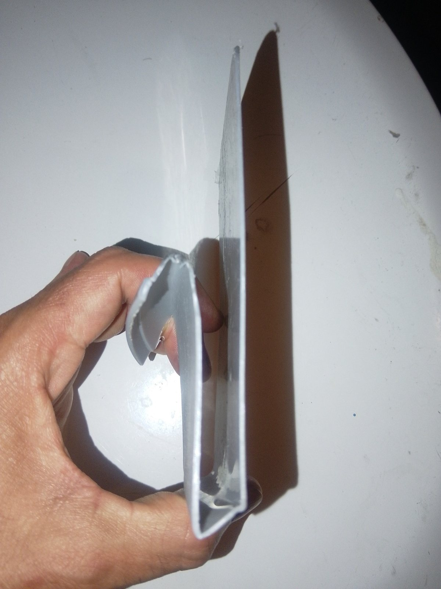
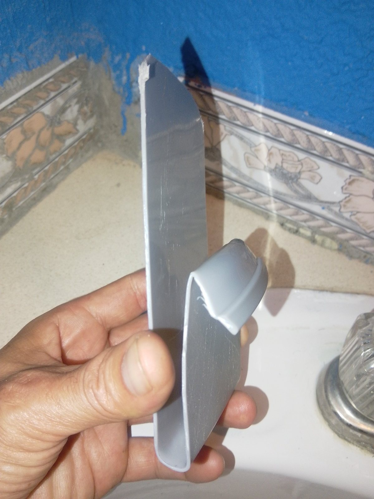

Pocket pressure, awkward access, constant repositioning.
The Founding 50
GHOST-SLIP
Always with you. Never in your way.
Ghost-Slip is a rear-waist phone carrier being developed to free your pockets while keeping your phone secure, discreet and easy to grab.
Prototype stage · refundable founder reservation · no belt required
REAR-WAIST
NO BELT
PASSIVE HOLD
CABLE-THROUGH

We got used to the phone being in the way.
Your phone belongs with you — not in the way.
Driving. Restaurants. Travel. Sitting. Work. Stairs. Exercise. We keep moving a tiny computer from pocket to hand to table because we accepted the pocket as its permanent home.
A large phone becomes part of the chair, pocket and body at the same time.
Walk, climb, work and train without a phone bouncing in a hand or pocket.
Keep the table clear and the phone immediately accessible.
Keep the phone on you instead of repeatedly moving it between bag, pocket and hand.
Designed around waistbands — jeans, shorts, athletic pants and leggings.
What if the phone simply had a better place to live?
The real prototype
Proof before polish.
P001 was hand-cut and heat-formed to test the core behavior first: placement, retention, comfort and movement. A cleaner P002 is the next step.
▶
The next demo video will show insertion, walking, sitting, bending, stairs and jumping with a different phone.
Drop the finished video URL into config.js — no page rebuild required.


Built around real movement
Simple enough to disappear into the day.
The waistband itself is part of the system.
Positioned behind the natural arm-swing path.
No snap, flap, release button or complicated ritual.
Phone remains exposed enough to retrieve naturally.
Planned lower access for charging, wired audio and acoustic openings.
Wear it under a shirt, jacket or suit — or leave it visible.
Concept
P001
Testing
Founding 50
Pilot
Launch
EARLY PRODUCT RESERVATION
Become one of the Founding 50
A small refundable reservation is our first real market test. Founder reservations receive first-production priority, founder pricing and first color choice.
250 MXN refundable reservation
- Priority for the first production allocation
- Founder launch pricing
- First color selection
- Prototype and production updates
- Opportunity to provide feedback before launch
- Reservation credited toward purchase or refunded under the stated terms
This is not a promise of a finished product or a fixed delivery date. Ghost-Slip remains under development.
ADMIN SETUP: connect a Formspree endpoint and payment link in config.js, then set setupMode:false.
Ghost-Slip is an early product under development. Final geometry, materials, colors, price and delivery timing may change.
Questions before reserving?
What the Founding 50 means.
Is this the finished retail product?
No. The page deliberately shows the real development stage. P001 proved core behavior; P002 and later prototypes refine geometry, materials, edges, ports and production quality.
Do I need a belt?
The current concept is specifically being developed to work from the waistband itself, including jeans, shorts and elastic-waist garments.
Why a reservation instead of a preorder?
The goal is to measure genuine demand while the product is still being refined. A small refundable reservation creates stronger evidence than a survey response without charging the full product price.
When will it ship?
No fixed date is promised at this stage. Founders receive development updates and priority when a production-ready version is approved.
Will every phone fit?
Broad compatibility is a design objective, not yet a final claim. Founder phone-model data helps determine the launch geometry and size strategy.
Can a company reserve units for employees?
Yes. Corporate gifting is part of the commercialization plan. Use the comment field to mention approximate quantity and company use.